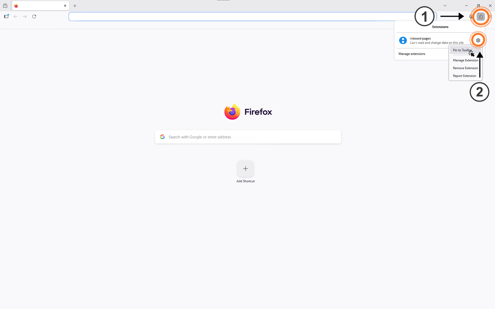
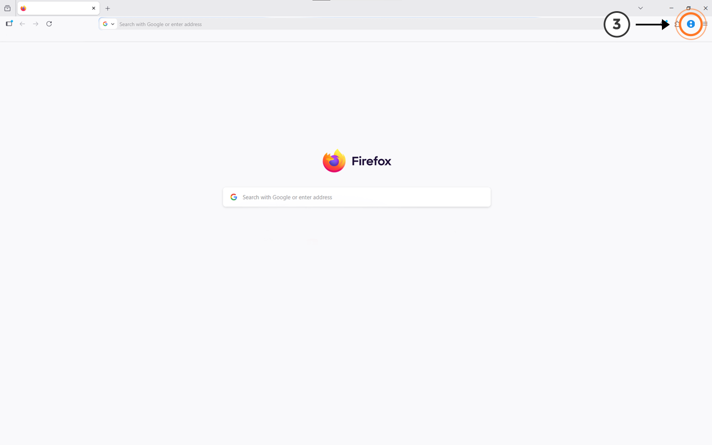

(1) Click the Extensions button (puzzle icon) in the top-right corner of Firefox.
(2) Find Indexed Pages in the list and click the gear icon → Pin to Toolbar.

(3) Click the Indexed Pages icon in the toolbar on any webpage to start highlighting.
